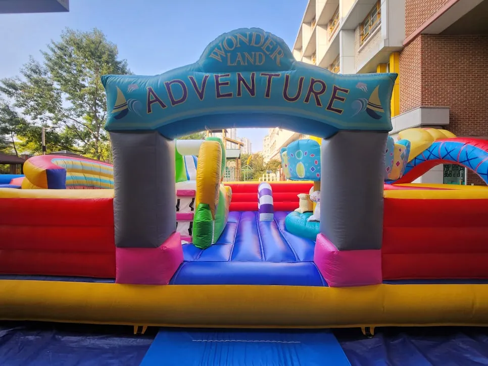

시흥 행사 준비 · 2026년 11월 8일
시흥 에어바운스 안전 점검 체크리스트 — 설치 · 바람 · 운영
시흥 에어바운스 안전 점검은 기구를 고르는 일보다 설치한 뒤의 관리가 더 중요합니다. 에어바운스는 바람을 넣어 세우는 기구라서 고정과 송풍, 인원, 바람 세기 네 가지가 흔들리면 바로 위험해집니다. F&J 이벤트(펀앤조이 체육교실)는 시흥 목감 병설유치원 에어바운스 행사에서 밀리터리 대형 에어바운스와 뽀로로 중형 슬라이드를 세웠습니다. 이 글은 담당 선생님이 설치 전과 운영 중에 직접 확인할 항목을 표로 정리했습니다.

- 에어바운스는 「관광진흥법」상 유원시설의 유기기구로 관리되고 크기에 따라 안전성검사 대상과 비대상으로 나뉩니다.
- 설치 전에는 바닥, 고정 방법, 송풍기 전원, 주변 공간을 확인합니다.
- 운영 중에는 동시 이용 인원, 신발 벗기, 소지품 보관 같은 이용 규칙을 입구에서 안내합니다.
- 강풍주의보 기준(풍속 14m/s 이상 또는 순간풍속 20m/s 이상)이 나오면 야외 기구는 멈춥니다.
- 본사(화성시 비봉면)에서 경기 남부 출장으로 시흥까지 갑니다.
1. 시흥 에어바운스 안전 점검의 출발은 기구 종류 확인
에어바운스는 놀이기구 가운데서도 유원시설의 유기기구로 분류되어 관리됩니다. 한국소비자원 보도자료에 따르면 에어바운스는 「관광진흥법」상 유원시설의 유기기구로 관리되고, 크기에 따라 안전성검사 대상과 비대상으로 나뉩니다. 소비자원이 설치와 관리 실태를 조사해 미흡하다고 알린 적도 있어서, 설치한 뒤에 관리하는 일이 그만큼 중요합니다. 담당자는 빌리는 기구가 어떤 종류인지, 고정은 어떻게 하는지를 업체에 먼저 물어보세요.
정책브리핑 자료에는 안전성검사 대상이 아닌 유기기구 가운데 사고가 잦은 미니에어바운스 등은 2년마다 정기 확인검사를 받도록 했다는 내용이 있습니다. 어떤 기구를 쓰는지에 따라 확인할 서류가 달라질 수 있으니 계약 전에 담당자와 이야기해 두면 좋습니다.
2. 설치 전에 확인할 것
시흥 목감 병설유치원 에어바운스 행사에서는 대형 기구와 중형 슬라이드를 함께 세웠기 때문에 기구 사이 간격과 이동 동선부터 그렸습니다. 설치 전에는 다음 표를 따라 확인하면 됩니다.
| 확인 항목 | 볼 것 | 누가 |
|---|---|---|
| 바닥 | 평평한지, 돌 · 유리 조각이 없는지, 물기 | 설치 업체 + 담당 선생님 |
| 고정 | 기구를 바닥에 고정하는 방법(핀 · 무게 추 등)과 상태 | 설치 업체 |
| 송풍기 | 전원 연결 위치, 전선이 걸리는 길에 없는지 | 설치 업체 |
| 주변 공간 | 벽 · 기둥 · 계단과의 거리, 아이들이 몰릴 대기 자리 | 담당 선생님 |
| 입구 · 출구 | 드나드는 곳이 한 곳으로 몰리지 않는지 | 함께 확인 |
| 규칙 안내판 | 신발 벗기 · 인원 제한을 보이게 붙일 자리 | 담당 선생님 |

3. 운영 중에는 사람이 지킵니다
에어바운스에서 가장 흔한 사고는 기구 안에서 서로 부딪히거나 입구에서 몰리는 일입니다. 그래서 운영 중에는 사람이 지키는 규칙이 중요합니다.
- 한 번에 들어가는 인원을 정하고 입구에서 세어서 들여보냅니다.
- 신발과 소지품은 입구 밖에 두게 합니다.
- 나이가 비슷한 아이들끼리 시간을 나눠 이용하게 합니다.
- 기구마다 선생님이 한 명씩 서서 아이들 움직임을 봅니다.
- 슬라이드는 한 명씩 차례로, 올라가면 바로 내려오게 합니다.

뽀로로 중형 슬라이드는 가운데 계단으로 올라가 양쪽 슬라이드로 한 명씩 내려오는 구조입니다. 올라가서 위에서 뛰거나 안 내려오면 뒤에서 기다리는 친구들이 다칠 수 있어서 올라가면 바로 타고 내려오기를 규칙으로 정합니다.
4. 바람이 불면 어떻게 하나요
야외 에어바운스는 바람에 약합니다. 기상청 기상특보 기준으로 강풍주의보는 육상에서 풍속 14m/s 이상 또는 순간풍속 20m/s 이상이 예상될 때 발표됩니다. 주의보 기준에 못 미쳐도 돌풍에 기구가 흔들리면 사용을 멈추는 쪽이 안전합니다. 행사 전에 누가 멈추라고 말하는지를 정해 두면 판단이 빨라집니다.
| 상황 | 대응 | 미리 정할 것 |
|---|---|---|
| 기구가 흔들림 | 이용을 멈추고 아이들을 나오게 합니다 | 멈추기 신호를 보낼 사람 |
| 비가 옴 | 이용 중단, 송풍기 전원 안전 확인 | 실내 대체 프로그램 |
| 강풍 예보 | 야외 설치 여부를 전날 다시 결정 | 연락 받을 담당자 |
5. 시흥 에어바운스 행사, 상담은 이렇게
날짜와 장소(실내 · 야외), 예상 인원, 아이들 나이만 알려 주세요. 그에 맞춰 기구 구성과 설치 위치를 정리해 드립니다. F&J 이벤트는 본사(화성시 비봉면)에서 경기 남부 출장으로 시흥까지 갑니다. 행사 · 대여 에서 에어바운스와 놀이기구를 볼 수 있고, 견적 문의 로 바로 요청하실 수 있습니다.
어린이날 행사를 계획 중이라면 어린이날 행사 에어바운스 고르기 도 함께 보세요.
자주 묻는 질문
에어바운스는 설치와 철수까지 해 주나요?
네. 에어바운스와 놀이기구는 설치와 철수까지 하는 대여가 가능합니다. 진행 인력이 필요하면 함께 구성합니다.
실내에서도 설치할 수 있나요?
강당이나 체육관처럼 천장 높이와 바닥이 맞으면 실내 설치가 가능합니다. 장소 사진이나 크기를 알려 주시면 확인해 드립니다.
비가 오면 어떻게 하나요?
실내 대체 장소와 프로그램을 미리 정해 두고 준비합니다. 야외 행사는 상담 때 먼저 말씀해 주세요.